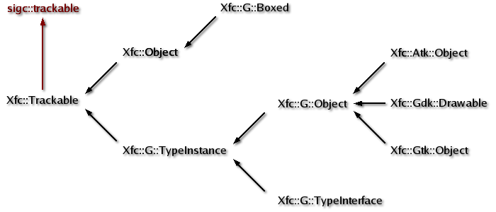

| Xfce
Foundation Classes |
|||
| « Main Page | |||
The XFC Object SystemTable of Contents
Understanding the XFC object system, the decisions that went into its design, its reference counting and its memory management will help you to better optimize your XFC applications. Essentially, the XFC object system integrates the functionality of the GLib object system, the libsigc++ library and C++ memory management into one easy to use programming interface. Achieving this required some design choices that restricted memory management but the end result is a secure C++ programming environment that prevents memory leaks. Design PrinciplesPerhaps the most important design issue to deal with when writing a language binding for GTK+ is integrated memory management. There are three possible ways a language binding can manage memory. The binding's wrapper object can manage the life cycle of the C object, the C object can manage the life cycle of the binding object, or you can have a combination of the both and leave the choice optional.GTK+ implements a system of self aware object-oriented classes that clean up after themselves when they're destroyed. This is achieved through reference counting, which is the basis of memory management in GTK+. A unique feature in GTK+ is that parent containers manage the reference count of their children. So if you hold onto a reference to a parent container you don't need to hold on to any references to the container's children, unless you have good reason. In C++ things are done differently. Dynamic objects are created with operator new and only get destroyed when operator delete is called. Stack objects are automatic objects that get destroyed when they go out of scope. In C++ there is no automatic garbage collection but implementing basic garbage collection is very simple and a part of good C++ design. Essentially, you put the construction and deletion of dynamic objects inside another object type and use that type to manage the memory of the contained object. This is how the standard auto_ptr<> class works. So how does XFC manage memory? In XFC the GTK+ C object is responsible for managing the life cycle of its C++ object wrapper. This design was chosen because its implementation is a natural extension to structure and function that GTK+ already provides. Its main advantage is that it makes memory management safer and easier to use, but there is one limitation. You cannot call operator delete on an XFC object. Instead, if you hold onto a reference to an XFC object you must call unref() to release your reference when your finished with the object. When the object's reference count reaches zero XFC automatically calls operator delete on the XFC object if it was created by operator new. The Library OrganizationThe XFC library is organized into namespaces. The primary namespace is the Xfc namespace. Within this namespace there are several secondary namespaces named according to the GTK+ library they wrap. These are:
Xfc::Gtk is a GUI toolkit that provides a complete object orientated widget collection, including all the widgets you might expect (windows, dialog boxes, buttons, notebooks, text fields and so on). It has an advanced tree and list widget with a model-view architecture. It has a feature rich text widget that supports the editing and display of Unicode text using the Pango internationalization subsystem. You can also write your own custom widgets either by subclassing the abstract Xfc::Gtk::Widget or by subclassing an existing concrete widget and modifying its functionality. The Base Class HierarchyThe base class hierarchy in XFC looks like this:
XFC
base class hierarchy
Xfc::Trackable is the primary base class for the entire XFC object hierarchy. It inherits from sigc::trackable so that XFC objects can auto-disconnect libsigc++ slots on destruction. Xfc::Trackable, Xfc::G::TypeInstance and Xfc::G::TypeInterface are abstract bases and generally you wont use these classes directly.
Reference CountingThe life cycle of an XFC object is controlled by its reference count, so it's important you understand reference counting. If you're already familiar GTK+ reference counting then you already understand XFC reference counting. XFC integrates GTK+ reference counting into its memory management scheme, and uses the same reference counting rules.An XFC reference counted object is created with an initial reference count of 1. When you create a G::Object that is not Gtk::Object you own the initial reference. So you must call unref() to release the reference when the object is no longer required. An example of G::Objects are Gtk::AccelGroup and Gtk::Style. When you create a Gtk::Object you don't own the initial reference, instead it's a floating reference that keeps the object alive until some other object claims ownership. A floating reference can be removed by anyone at any time by calling ref(). The first call to ref() will also sink a Gtk::Object so there is no sink() function. Most widget code assumes that only a Gtk::Container will call ref() to hold onto a reference to a child widget. If you create a Gtk::Object and never pass it to an owner you have to call ref() yourself and later call unref(). If you never call unref() it causes a memory leak. An Xfc::Object, just like G::Object, is created with a reference count of 1 that is owned by the caller and must be released later by calling unref(). All Xfc::G::Boxed objects are derived from Xfc::Object. Gtk::Window is an exception to the rule. Its initial reference is owned by GTK+ so you only need to call unref() if you first called ref(). To destroy a Gtk::Window you must explicitly call dispose(), not unref(). When emitted, a destroy signal requests that reference owners drop there references. This causes Gtk::Container to drop its references to child widgets, and GTK+ to drop its reference to a top level Gtk::Window. This normally leads to object finalization, unless some other object is holding onto a reference. If your a GTK+ programmer these rules should sound familiar to you because they're the GTK+ reference counting rules. The advantage in using GTK+ reference counting is that it keeps memory management consistent across the XFC and GTK+ libraries. Memory ManagementHow do you prevent memory leaks? By writing code that doesn't contain any! Bjarne Stroustrup says "Clearly, if your code has new operations, delete operations, and pointer arithmetic all over the place, you are going to mess up somewhere and get leaks, stray pointers, etc. This is true independently of how conscientious you are with your allocations: eventually the complexity of the code will overcome the time and effort you can afford. It follows that successful techniques rely on hiding allocation and deallocation inside more manageable types".XFC partially implements this approach to memory management by hiding deallocation inside the GTK+ reference counting scheme. This helps to prevent of memory leaks and makes memory management much safer and easier to use. It also ensures consistent and familiar memory management techniques across the XFC and GTK+ libraries. So how does XFC's memory management actually work? Xfc::Trackable keeps track of all dynamic memory allocations. When a new XFC object is created XFC installs a C callback function that gets called when the wrapped C object is destroyed. If the XFC object was created on the heap the callback function will call operator delete. This leads to the most important rule of memory management in XFC: you must never call delete on an XFC object. If the object was created by operator new, XFC will automatically call delete when the object's reference count reaches zero. To create an XFC object on the heap you have to call operator new. The new object is created with an initial reference count of 1. If the object is a G::Object but not a Gtk::Object, you own the object's initial reference and must call unref() at some stage. Gtk::AccelGroup
*group = new Gtk::AccelGroup; When you pass a Gtk::AccelGroup (or any other G::Object) to an owner, the owner will hold onto a reference to the object so you can safely call unref(). If the object is a Gtk::Object its initial reference will be a floating reference. If you pass a Gtk::Object to an owner, like Gtk::Container you don't have to call unref() because the owner will call ref() to hold onto a reference to the object and will sink the object to clear the floating reference. For example: Gtk::VBox
*vbox = new Gtk::VBox;If for some reason you want to hold onto a reference to a Gtk::Object you passed to an owner you have to call ref() and later unref(). In XFC there is no sink() function. Calling ref() for the first time on a Gtk::Object will automatically sink the object if it has a floating reference. If you want to hold onto a pointer to a widget you added to a container, for later use, you don't need to call ref(). It is safe to use the pointer as long as the container is valid because the container holds onto a reference to the widget and will only call unref() when the container itself gets destroyed. You don't need to release the initial reference for a G::Object created on the stack. Stack objects are automatic objects and as such will automatically release their initial reference when they go out of scope. That means you only need to call unref() on a stack object if you first called ref(). Dialog boxes (which are a windows) are an exception. When you create a modal dialog box by calling run() you must call dispose() to destroy the dialog box, not unref(). Gtk::MessageDialog
*dialog = new
Gtk::MessageDialog(Gtk::MESSAGE_INFO, Gtk::BUTTONS_CLOSE, this); Xfc::Object is a reference counting base class that provides the reference counting facilities required to implement automatic memory management for those objects that don't derive from G::Object. Examples of such objects include G::Boxed, G::Date, G::Scanner, G::Timer, Gdk::Region, Gtk::TargetList and Pango::Attribute. Like G::Objects, Xfc::Objects can either be created dynamically with operator new or declared as automatic variables on the stack. Dynamically allocated Xfc::Objects must be explicitly unreferenced with unref(), so that operator delete gets called. If you don't want to be bothered calling unref() just use an XFC smart pointer and it will call unref() for you. As with G::Objects, Xfc::Objects declared on the stack don't need to be unreferenced, unless you first called ref(). The XFC Smart PointerThe XFC smart pointer (Xfc::Pointer<>) is a reference counting smart pointer that manages the life cycle of the object it points to by calling ref() and unref(). Unlike other reference counting smart pointers, Xfc::Pointer<> is GTK+ aware because it knows the difference between a G::Object and Gtk::Object, and handles their initial reference counts appropriately. So make sure you only use a XFC smart pointer on XFC objects.To use Xfc::Pointer<> just pass the name of the object it will point to as the template argument. For example: Pointer<Gtk::AccelGroup>
group = new Gtk::AccelGroup; Xfc::Pointer<> is always used as a stack object so unref() automatically gets called on the object pointed to when it goes out of scope. How does Xfc::Pointer<> know the difference between a G::Object and a Gtk::Object? That's what the second argument 'owns_reference' is for in an object's protected constructor. If owns_reference is true the caller owns the initial reference and must call unref() to release it. If owns_reference is false the caller does not own the initial reference and only needs to call unref() if ref() was first called. When owns_reference is false the caller must either pass the object to an owner object, such as a container, or call ref(). Not passing an object to an owner object and not calling ref() will cause a memory leak. Look at these protected constructors: G::Object(GObject
*object, bool
owns_reference = true); Examining
the default value of
owns_reference in these
constructors you can see that for G::Object
owns_reference is true so the caller owns the initial reference count.
Gtk::AccelGroup derives directly from G::Object so owns_reference is
also true and the caller owns the initial reference count. For
Gtk::Object, Gtk::Widget and Gtk::Window owns_reference is false
so the
caller does not own the initial reference. For all Gtk::
objects
and widgets the initial reference is a floating reference, except for
Gtk::Window. GTK+ owns all top level windows, including dialogs. At
construction GTK+ references and sinks a window clearing its floating
reference, so you should only call unref() on a top level window if you
first called ref().
When you assign an object pointer to a Xfc::Pointer<>, the smart pointer examines the value of owns_reference. If owns_reference is true it doesn't call ref() on pointer acquisition. Instead, it takes over ownership of the object's initial reference count and sets owns_reference to false. If owns_reference is false ref() is called on pointer acquisition. When a smart pointer goes out of scope it always calls unref() on the object it points to. If your new to GTK+ programming and find the GTK+ reference counting rules too complex you can always use a XFC smart pointer for all objects you create with operator new. The smart pointer will know how handle reference counting correctly for all XFC objects. As you become more experienced you can then start using smart pointers only when you need to. If you take a look and the widget demonstration program and example applications that come with libXFCui, you will notice that a smart pointer is used for all objects that need their initial reference released. This makes programming a lot easier and avoids all those direct calls to unref(). This is a good place to talk about the use of XFC smart pointers as function arguments and return values. If a member function returns a pointer to an object that has had its reference count incremented and must be unreferenced, the pointer is returned as a smart pointer. Otherwise it is returned as a normal (dumb) pointer. But you can always assign the returned dumb pointer to a smart pointer if you prefer. The Truth about Memory LeaksThe truth about memory leaks is that XFC cannot leak memory, but be warned XFC is not a garbage collector and must not be used that way. As mentioned earlier XFC tracks all dynamic memory allocations. It does this by storing a pointer to all memory allocated by operator new in a std::list<>. The newest allocations are pushed onto the front of the list. When operator delete is called on a dynamic object the list is searched from the front. When the object pointer is found it is removed from the list and the object it points to is deleted. This is quite fast because as a program executes and transient dynamic objects are created and destroyed, the most recent pointers will aways be found at the front of the list.As a safe guard, when a program terminates the allocation list is iterated over and any pointers found in the list are deleted. This only deletes an object's raw memory and not the actual object pointed to because the actual object type is not known. Object destructors are not called either. So its up to you to learn the GTK+ reference counting rules and use them correctly. Why is the allocation list needed? The main reason is to prevent memory leaks. For a language binding there are many potential memory leaks because GTK+ creates a lot of global objects that don't get destroyed until the GTK+ libraries are removed from memory. If you use the GNOME desktop GTK+ will not be removed from memory and those global objects wont get destroyed until GNOME is shut down. The destruction of a C object's C++ wrapper relies on the callback notification that occurs when a C object is destroyed. For global GTK+ objects that notification wont occur until after an application terminates, and so any global C++ wrappers used wont get deleted. Over time this can add up to a significant memory leak. What the XFC allocation list does is trap these pointers and reclaims the raw memory allocated to them when a program terminates. As an added bonus any stray pointers not unreferenced properly will also get trapped and their memory reclaimed. So should you make a mistake in your application it wont leak memory.
|